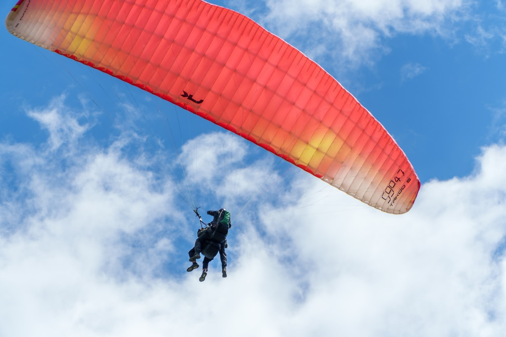
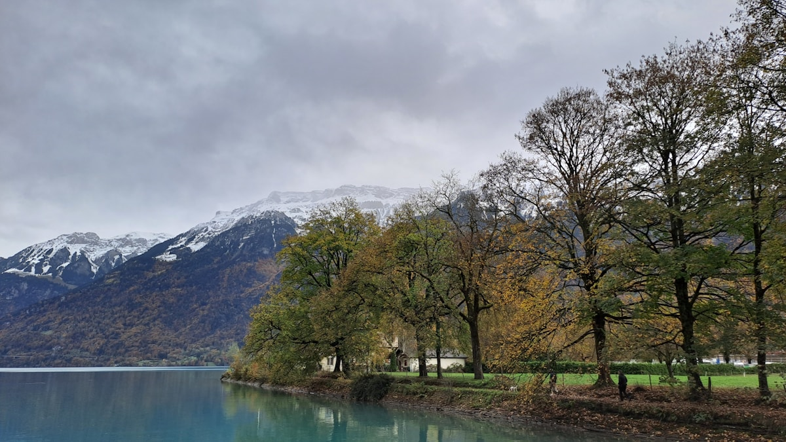

Complete 7-Day Switzerland Itinerary
Overview
This 7-day itinerary covers the best of Switzerland, from vibrant cities to majestic mountains. It is designed for first-time visitors with a perfect mix of urban exploration, Alpine adventures, and scenic train rides.
Day 1: Arrival in Zurich
Morning: Arrive at Zurich Airport. Train to Zurich Hauptbahnhof. Check into hotel in Old Town.
Afternoon: Explore Bahnhofstrasse shopping street. Visit Lake Zurich promenade.
Evening: Walk through Niederdorf district. Dinner at a traditional Swiss restaurant.
Daily Budget: CHF 150-200 (₹14,250-19,000)
Dining Suggestions: Zeughauskeller (traditional Swiss), Hiltl (vegetarian)
Day 2: Zurich to Lucerne
Morning: 45-minute train to Lucerne. Visit Chapel Bridge and Lion Monument.
Afternoon: Explore Lucerne's Old Town. Take a boat cruise on Lake Lucerne.
Evening: Walk along Museggmauer city wall. Lakeside dinner.
Daily Budget: CHF 180-250 (₹17,100-23,750)
Day 3: Lucerne to Interlaken
Morning: Scenic 2-hour train to Interlaken via Brunig route.
Afternoon: Hoheweg promenade for mountain views. Explore Interlaken.
Evening: Walk along Aare River. Optional paragliding (CHF 180-250).

Daily Budget: CHF 200-300 (₹19,000-28,500)
Day 4: Jungfraujoch - Top of Europe
Morning: Cogwheel train to Jungfraujoch (3,454m) via Kleine Scheidegg.
Afternoon: Visit Ice Palace, Sphinx Observatory, Aletsch Glacier viewpoint.
Evening: Return to Interlaken. Relax and enjoy dinner.
Daily Budget: CHF 250-350 (₹23,750-33,250)

Day 5: Grindelwald & Lauterbrunnen
Morning: Train to Grindelwald. Gondola to First (2,168m) for spectacular views.
Afternoon: Visit Lauterbrunnen Valley with 72 waterfalls. See Staubbach Falls.
Evening: Return to Interlaken. Farewell dinner.
Daily Budget: CHF 200-300 (₹19,000-28,500)
Day 6: Interlaken to Zermatt
Morning: Scenic train to Zermatt (2.5 hours via Visp). Check into hotel.
Afternoon: Explore car-free Zermatt. Visit Matterhorn Museum.
Evening: Gornergrat Railway for sunset Matterhorn views.
Daily Budget: CHF 250-350 (₹23,750-33,250)
Day 7: Zermatt Departure
Morning: Visit Matterhorn Glacier Paradise or Schwarzsee.
Afternoon: Last-minute souvenir shopping. Train to Zurich/Geneva Airport.
Evening: Depart from Switzerland.
Daily Budget: CHF 200-300 (₹19,000-28,500)
Estimated total: CHF 1,500-2,100 (₹1,42,500-2,00,000) per person excluding flights. Includes mid-range accommodation, Swiss Travel Pass, meals, and attractions.